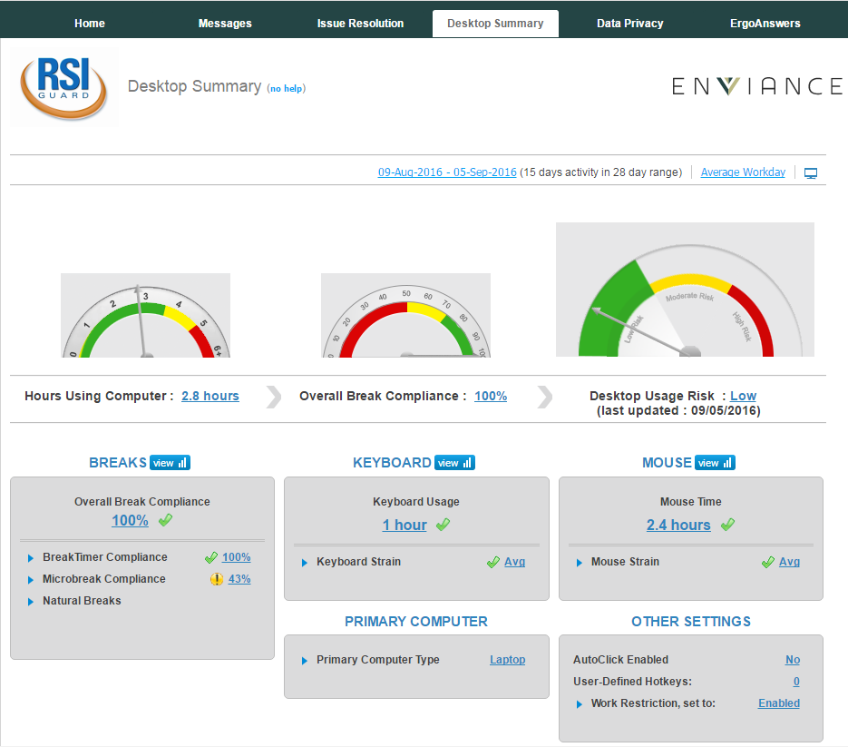
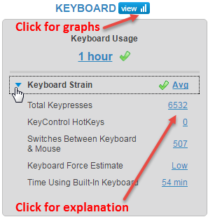

The Desktop Summary tab in the user dashboard contains information for users who have installed RSIGuard.
The view of the Desktop Summary is the same for an administrator as that presented to the end user. Administrators can view the same information for a user from the Employee Summary > Desktop Summary & Actions.
The gauges show the user's break compliance, keyboard usage and mouse usage over a date range.

By default, the data is for an Average Workday over a selected date range, as indicated at the top.
Click on the date range to specify a custom date range over which to view the user's Desktop data.
For more details on any item, expand the section by clicking the blue arrow. Click the View icon to see detailed graphs.

For more information on the desktop usage graphs see Desktop Summary & Actions.